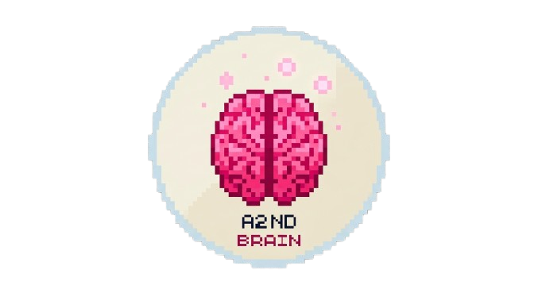

<!DOCTYPE html>
<html lang="th">
<head>
  <meta charset="UTF-8">
  <meta name="viewport" content="width=device-width, initial-scale=1.0">
  <title>A 2ND Brain</title>
  <link rel="stylesheet" href="styles.css">
</head>
<body>
  <div class="app-container">
    <!-- 1. Sidebar ด้านซ้าย -->
    <aside class="sidebar">
      <div class="brand">
        
        <h2>A 2ND Brain</h2>
      </div>
      <button id="btn-new-note" class="primary-btn">+ โน้ตใหม่</button>
      <div class="folder-tree" id="folder-tree">
        <p class="section-title">โครงสร้างสมองของคุณ</p>
        <!-- โครงสร้างโฟลเดอร์ที่ AI สร้างให้จะมาแสดงตรงนี้ -->
      </div>
    </aside>

    <!-- 2. Main Editor ตรงกลาง -->
    <main class="editor-section">
      <div class="editor-header">
        <input type="text" id="note-title" placeholder="ชื่อหัวข้อโน้ต..." value="ยินดีต้อนรับสู่ A 2ND Brain">
      </div>
      <textarea id="note-content" placeholder="พิมพ์ความสนใจ ไอเดีย หรือเนื้อหาของคุณที่นี่..."></textarea>
    </main>

    <!-- 3. AI Copilot Panel ด้านขวา -->
    <aside class="ai-panel">
      <div class="ai-header">
        <h3>🧠 AI Architect</h3>
      </div>
      <div class="ai-chat-history" id="ai-chat-history">
        <div class="chat-bubble ai">
          สวัสดีครับ! ผมคือ AI ช่วยจัดระเบียบสมองสี่ส่วนของคุณ คุณตั้งใจจะใช้ A 2ND Brain บันทึกเรื่องอะไรเป็นหลักครับ? (เช่น งานวิจัย, ไอเดียธุรกิจ, หรือการเรียน)
        </div>
      </div>
      <div class="ai-input-box">
        <input type="text" id="ai-input" placeholder="พิมพ์ตอบ AI เพื่อเริ่มตั้งค่าสมอง...">
        <button id="btn-send-ai">ส่ง</button>
      </div>
    </aside>
  </div>

  <script type="module" src="app.js"></script>
</body>
</html>